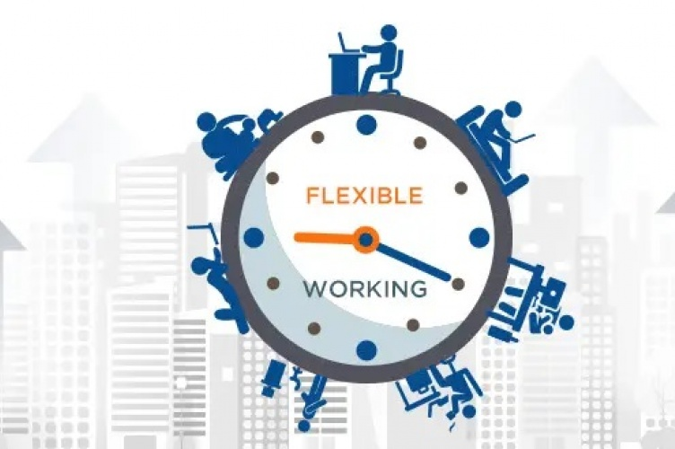

Technology affects every area of our lives. The way we carry out our
business and interact with others is influenced by technology. It has
enhanced socialization and productivity, among other spheres that touch
our daily lives. The power of the internet has changed everything and
made the entire globe a small village. All our recent inventions are
attributed to advancements in technology. There are many things that we
can boast about when we talk of technology in the current century. For
example, technology has influenced education and the way we learn. There
is more personalized learning, and students can get help from experts
online. Currently, learners can get access to info readily and complete
their tasks confidently. It is easier to handle assignments because they
can scrutinize various services and find the best academic assistant
platforms to aid them deliver premium pieces. It is a plus for most
students who struggle to complete their assignments. Here are some of
the significant avenues where technology impacts our daily lives.
Some of them are:
IMPROVED COMMUNICATION
Currently, social media and messaging are the touching base in
communication. Gone are the days of posting letters that took months to
be replied to. Currently, information exchange is instant. You call or
send an SMS to a person who is miles away. The ease of information relay
has impacted our lives tremendously. Video calling is another boom in
the communication industry, congrats to technology. Currently, lockdowns
and social distancing have caused families and friends to go online.
Video calling allows people to connect and see each other even where
distance is limiting. These are some of the technologies we are
interacting with daily.
ACCESSIBLE SHOPPING
Many of us get our fashions online. We buy our clothes, gadgets,
foodstuffs, and other comedies online. The array of online stores helps
us to access various materials easily. Besides, there are countless
cards and phone payment methods that have made online purchases
convenient. Right now, if you want to buy anything, you can check it
online. You do not have to travel far. We make orders and have
everything delivered at our doorsteps. This shows how technology is
impacting our daily lives. Technology is now at the center of commerce.
People turn to technology when they want to get information about
various products. They can also compare prices from different stores to
make informed choices. This was a distant dream, but it is possible with
the internet.
BETTER INFORMATION ACCESS
There is a lot of information at our disposal. It is not strenuous if
you want to find out something provided you are connected. For the
majority of us, we do not have to move from where we are. We only need
to take our smartphones and get Googling. They had to take trips to the
library to find resourceful materials to complete their tasks for
learners. Right now, students can get help from professionals online. If
you want experts to complete your assignments, services like
masterpapers.com are available to deliver what you want. With the
availability of information online, it is easy to find the best essay
writing service to write your research papers. Students can have easy
college days because of technology. Entrepreneurs can also use the
available data to make progress in their businesses. Big data can help
them to make decisions that increase their profit margins. There are
also low advertisement costs because of technology. In essence,
everything we do is centered on technology.
FLEXIBLE WORKING

People will remember 2020 for many negative reasons. But the most
defining aspect is that it has led to a broad acceptance of working from
home. Many people have adopted the system of working from their
locations to curb the spread of COVID19. Working from home has always
been there, primarily for freelancers. Working from home has been
achievable because of the internet and the availability of mobile
devices. All these are because of technology. It is clear how technology
impacts our lives. Everything we do, from communication to travel, is an
indication of how technology is inevitable. Intelligent health tracking
also allows individuals to take charge of their health. Fitness devices
help us keep track of our health and make necessary adjustments when
needed. These are some of the avenues technology has impacted our daily
lives for good. We can no longer run away from technology. It is more
productive when we learn about technology and use it in our lives. There
are many positive paybacks to reap from technology